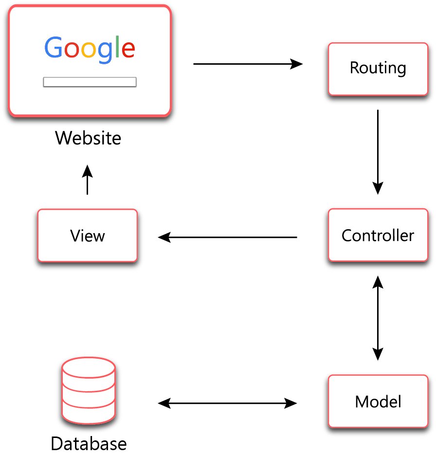
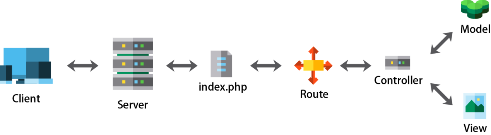

第十章 Laravel 的ＭＶＣ I
HTTP 相關基本知識
-
HTTP 資料傳遞
-
HTTP 屬無狀態協定，時常需要資料轉交至下個頁面，才能繼續進行資料處理！
-
PHP 內常用的超全域變數如下 :
變數名稱 說明 $_SERVER 取得伺服器及 PHP 執行環境的訊息 $_GET 取得 GET 變數 $_POST 取得 POST 變數 $_FILES 取得文件上傳變數 $_COOKIE 取得 Cookie 變數 $_SESSION 取得 Session 變數 -
GET 變數的使用
- 利用 HTML 的 Form 表單，指定使用方法為 GET
- 例 : form.php
<form action="auth.php" method="get"> 請輸入帳號密碼 : 帳號 : <input type="text" name="account" /><br /> 密碼 : <input type="password" name="password" /><br /> <button type="submit">登入</button> </form> - auth.php
<?php $account = $_GET["account"]; $password = $_GET["password"]; echo "帳號 : ".$account; echo "密碼 : ".$password; ?>- 但是，瑞凡，沒人會用 GET 來傳帳密資料的！
-
POST 變數的利用
- 將原來的表單的方法，改成 POST !
- 例 : form.php
<form action="auth.php" method="post"> 請輸入帳號密碼 : 帳號 : <input type="text" name="account" /><br /> 密碼 : <input type="password" name="password" /><br /> <button type="submit">登入</button> </form> - auth.php
<?php $account = $_POST["account"]; $password = $_POST["password"]; echo "帳號 : ".$account; echo "密碼 : ".$password; ?>
-
SESSION 變數的利用
-
如果需要同網頁存取共同的資訊，可以使用 session !
-
session 一定啟用，短時間內不會被清除，需要自行清除資料內容！或是等待一段時間後，會被系統清除！
-
例 : session.php
<?php //啟動 session session_start(); //執行 session 存放資料功能 $_SESSION['memID'] = "A001"; //取得 session 資訊 $id = $_SESSION['memID']; echo "session : $id"; //清除 session unset($_SESSION['memID']); session_unset(); ?>- session 只要換網頁，就會被清除了！
-
COOKIE 變數的應用 :
- 想要將資料暫時存放在客戶端，可以使用 cookie !
- 例 :
<?php //設定 cookie ，並設定有效時間 setcookie("name","Peter",time()+3600); //存取 cookie echo $_COOKIE["name"]; //消除 cookie setcookie("name","Peter",time()-3600); ?>
-
-
-
HTTP 標頭與回應
-
HTTP 標頭 : 用來傳送有關 HTTP 訊息的資料
- 語法 :
header(String, replace, http_response_code)- string : 指定發送的表頭
- replace : 是否可以取代以前的表頭，其值為 true of false
- http_response_code : 用來強迫指定 HTTP 回應碼
- 常見的應用方式 :
- 例 : 利用 Location 轉址
header("Location: http://google.com"); header("Location: session.php"); - 例 : 使用 Refresh 定時更新網頁
header("Refresh: 5"); //每五秒更新一次網頁 header("Refresh: 5;url=session.php"); - 例 : 使用 Content-type 設定輸出網頁 MIME 格式編碼
<?php //指定下載的文件是 pdf 檔案格式！ header("Content-type:application/pdf"); //指定下載的檔案名稱為 download.pdf header("Content-Disposition:attachment;filename='download.pdf'"); readfile("original.pdf"); ?>- MIME 資料型態表
MIME 資料類型 說明 text/html HTML網頁檔案 text/xml XML文件檔案 image/jpeg JPEG圖片檔案 image/gif GIF圖片檔案 image/png PNG圖片檔案 text/plain 一般文字檔案 application/pdf PDF 文件檔
- MIME 資料型態表
- 例 : 利用 Location 轉址
- 語法 :
-
HTTP 常見的回應編號
回應碼 回應訊息 說明 200 OK 伺服器成功處理請求 301 Redirect 轉換網址 302 Move Permanently 網址永久轉移到新的網址 304 Not Modified 文件內容未被修改，直接由瀏覽器快取讀取 400 Bad Request 客戶端送了一個錯誤的請求給伺服器 401 Unauthorized 客戶端未驗證身份 403 Forbidden 被伺服器端拒絕請求 404 Not Found 請求的網址內容不存在 405 Method Not Allowed 不支援請求中的方法 408 Request Timeout 請求逾時 500 Internal Server Error 伺服器發生錯誤 501 Not Implemented 用戶端發出的請求超出伺服器能力範圍 503 Service Unavailable 目前伺服器無法提供服務 505 HTTP Version Not Supported 伺服器不支援請求中的HTTP版本
-
MVC 概念
- MVC (Model-View-Controller)概念
- MVC是一種軟體架構模式
- 將系統劃分成3個部分 : Model (模型), View (視圖), Controller(控制器)，常被應用在網站的專案上
- Model : 負責所有的商業邏輯以及資料處理，擁有對資料的直接存取權。
- View : 負責介面呈現
- Controller : 負責接收請求，轉發給Model處理，最後回傳結果。
- MVC 結構圖 
Laravel 的 Router 模組
-
Laravel Routing簡介
- 有一個中間程式，它會將接收到的訊息，轉發到該去的地方 
- 整個網站的入口就是位於 /public/index.php
- 預設的 Route File : /routes/web.php
<?php Route::get('/', function () { return view('welcome'); }); ?>
-
Laravel Routing 語法 :
Route::{HTTP verb}($url, $callback);- HTTP verb :
- GET : 取得資源
- POST : 新增一筆資源
- PUT : 更新一筆資源
- Patch : 更新一筆資源的部分內容
- Delete : 刪除一筆資源
- Options : 取得Server支援的Request Types
Route::get($url, $callback); Route::post($url, $callback); Route::put($url, $callback); Route::patch($url, $callback); Route::delete($url, $callback); Route::options($url, $callback); - $url : 代表接收到的網址，像根目錄就是/，而登入可能是/login
- $callback : 代表處理這個要求的方法
- 其它 :
// 原來的 web.php Route::get('/', function (){ return view('welcome'); }); // 可以改成 Route::view('/', 'welcome'); //若是比較複雜的處理，就交給 Controller 進行 Route::get('user/profile', 'UserController@showProfile');
- 接受多個 HTTP 方法 :
Route::match(['get','post'], '/', function(){ // 只接受 路由 '/' 的 GET 和 POST 方法 }); Route::any('/',function(){ // 可接受 路由 '/' 的所有方法 });
- HTTP verb :
-
路由參數傳遞
-
例 : 指定查看某一編號的網頁文章
Route::get('doc/{id}', 'DocController@show'); //由 Client 端來的 id ，就會轉送到 DocController 的 show() 來進行處理，最後回傳資料給 Client 端 -
例 : 表示可選擇的參數！
Route::get('users/{name?}', function ($name = 'Peter'){ return 'Hello ,'.$name; }); // {name?} 表示可填入資料，或者不填入資料！沒資料時，會填入預設的資料！ -
例 : 多個參數資料傳遞
Route::get('users/{name?}/score/{project}', function ($name = 'Peter', $project){ return 'Hello ,'.$name. ' Your project : '.$project; //同時多個參數傳入 }); -
例 : 使用正規化表達式限制參數
// id只能輸入 0-9 Route::get('users/{id}', function ($id) { // })->where('id', '[0-9]+'); // username只能輸入大小寫的英文字母 Route::get('users/{username}', function ($username) { // })->where('username', '[A-Za-z]+'); // id只能輸入數字;classes只能輸入特定文字 Route::get('posts/{id}/{classes}', function ($id, $classes) { // })->where(['id' => '[0-9]+', 'classes' => '(chinese|english|math)']); -
例 : 路由參數規格化
//將參數規格統一之後，方便程式的使用與維護 Route::pattern('member_id','abc[0-9]{10}'); Route::get('members/{member_id}',function($member_id){ return '會員編號:'.$member_id; });
-
-
使用路由群組
- 路由參數可以群組化！
-
路由前綴 : 透過前綴詞 prefix ，群組化路由路徑！
- 例 :
Route::prefix('admin')->group(function (){ Route::get('users', function (){ //所以網址要是/admin/users才會進來這裡 }); });
- 例 :
-
路由中介層 : 把一群Route群組起來，經過驗證才可以進入存取
- 例 :
Route::middleware(['member'])->group(function () { Route::get('member_center', function () { // 經過member middleware驗證後才能進入 }); }); - Middleware是一個過濾機制，讓Client在存取某些資源時必須先經過驗證，否則會被導向其他地方。
- 例 :
-
- 路由參數可以群組化！
-
路由命名
-
基本用法
- 例 :
Route::get('/',function(){ //這裡做了一堆事 })->name('index');
- 例 :
-
利用路由重新命名的方式，可以區分不同的路由作用
- 例 :
// 利用 url('/login')提取資料時，容易搞混 Route::get('post', 'PostController@index); Route::post('post', 'PostController@create); //重新命名之後 Route::get('post', 'PostController@index')->name('post.index'); Route::post('post', 'PostController@login')->name('post.login'); //只需要使用 route('post.index') / route('post.login) 就可以各自己網址
- 例 :
-
配合前綴詞的用法
- 例 :
Router::group(['as'=>'users.', 'prefix'=>'users'],function(){ Route::group(['as'=>'comments.','prefix'=>'comments'],function(){ //路由名稱將會是 users.comments.show Route::get('{id}',function(){ //要做的事 })->name('show'); }); });
- 例 :
-
-
路由表的查詢
- 利用 artisan 提供的 route:list 指令，來查詢己經定義好的路由內容
- 例 :
# php artisan route:list # php artisan r:l
參考文獻
PHP Laravel 開發入門(四) – 路由(Routes) Laravel Routing 路由控制 Laravel Routing